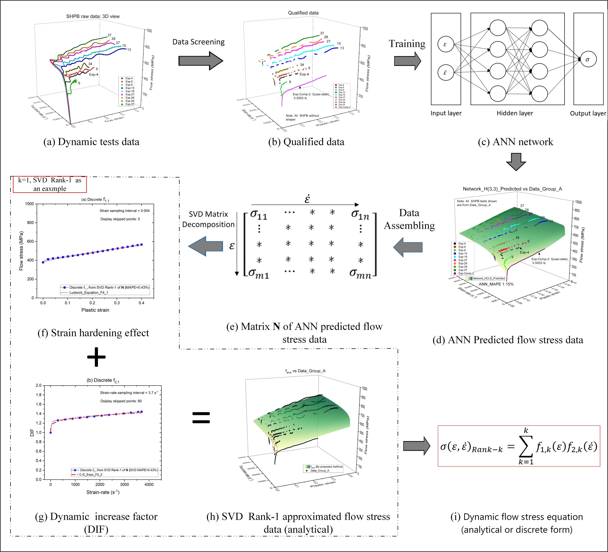
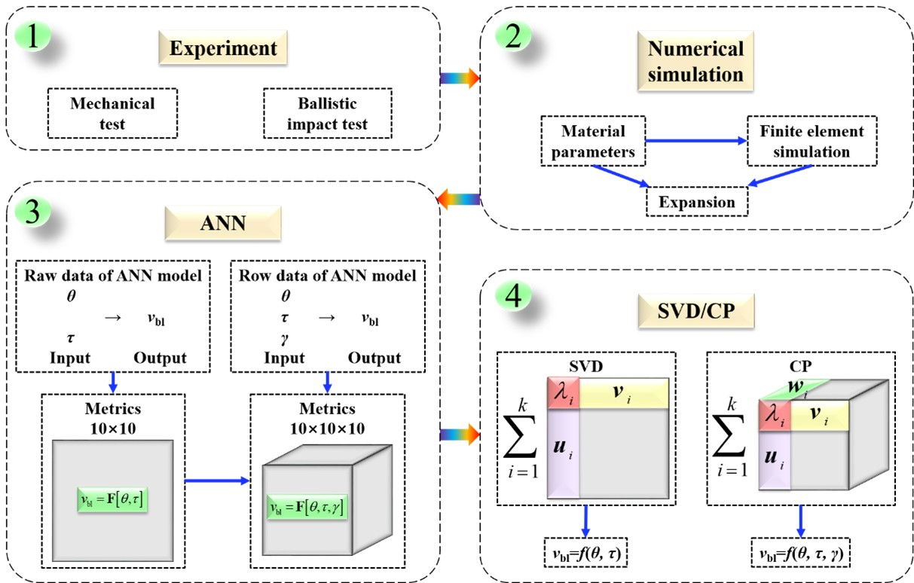

Research Areas

Three Interconnected Research Pillars
Unified by a shared methodology — combining experimental mechanics with data-driven computational approaches across different material and structural systems.

Core Research
Dynamic Constitutive Modeling
Pioneering SVD/CP tensor decomposition and neural network frameworks to determine the dynamic flow stress of metals directly from discrete SHPB experimental data — rigorously examining the mathematical foundations of the Johnson-Cook paradigm.
Learn More →

Impact Dynamics
Impact Mechanics & Ballistic Performance
Experimental and computational study of ballistic impact phenomena — from polymer-aluminium layered plates to ANN-based predictive models for ballistic limit velocity and residual velocity across multi-parameter impact scenarios.
Learn More →
Current Focus
Battery Impact Safety & Health Management
Bridging impact mechanics expertise with electrochemical safety — investigating failure modes of batteries under extreme loading, and developing deep learning frameworks for real-time damage monitoring via acoustic emission signals.
Learn More →